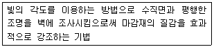
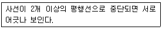
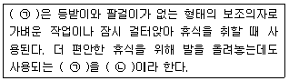
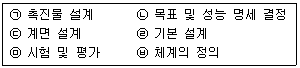
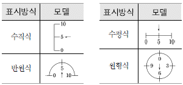
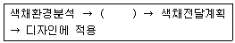
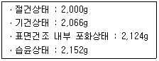
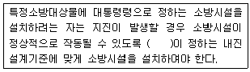

실내건축산업기사 (2016-03-06 기출문제)
1과목: 실내디자인론
1. 디자인 원리에 관한 설명으로 옳지 않은 것은?
- 대비조화는 부드럽고 차분한 여성적인 이미지를 준다.
- 유사조화는 시각적으로 동일한 요소들에 의해 이루어진다.
- 조화란 전체적인 조립방법이 모순 없이 질서를 잡는 것이다.
- 통일은 변화와 함께 모든 조형에 대한 미의 근원이 되는 원리이다.
(정답률: 87%)

2. 출입구에 통풍기류를 방지하고 출입 인원을 조절할 목적으로 설치하는 문은?
- 접이문
- 회전문
- 여닫이문
- 미닫이문
(정답률: 91%)
3. 다음 설명에 알맞은 조명의 연출 기법은?

- 실루엣 기법
- 스파클 기법
- 글레이징 기법
- 빔 플레이 기법
(정답률: 76%)
4. 실내디자이너의 역할과 조건에 관한 설명으로 옳지 않은 것은?
- 실내의 가구 디자인 및 배치를 계획하고 감독한다.
- 공사의 전(全)공정을 충분히 이해하고 있어야 한다.
- 공간구성에 필요한 모든 기술과 도구를 사용할 수 있어야 한다.
- 인간의 요구를 지각하고 분석하며 이해하는 능력을 갖추어야 한다.
(정답률: 82%)
5. 주거공간을 행동 반사에 따라 정적공간과 동적공간으로 구분할 수 있다. 다음 중 정적공간에 속하는 것은?
- 서재
- 식당
- 거실
- 부엌
(정답률: 92%)
6. 실내공간을 구성하는 기본요소에 관한 설명으로 옳지 않은 것은?
- 바닥은 고저차로 공간의 영역을 조정할 수 있다.
- 천장을 높이면 영역의 구분이 가능하며 친근하고 아늑한 공간이 된다.
- 다른 요소들이 시대와 양식에 의한 변화가 현저한데 비해 바닥은 매우 고정적이다.
- 벽은 공간을 에워싸는 수직적 요소로 수평 방향을 차단하여 공간을 형성하는 기능을 한다.
(정답률: 83%)
7. 조명기구 자체가 하나의 예술품과 같이 강조되거나 분위기를 살려주는 역할을 하는 장식조명에 속하지 않는 것은?
- 펜던트
- 브라켓
- 샹들리에
- 캐스케이드
(정답률: 75%)
8. 사무소 건물의 엘리베이터 계획에 관한 설명으로 옳지 않은 것은?
- 조닝영역별 관리운전의 경우 동일 조닝내의 서비스층은 같게 한다.
- 서비스를 균일하게 할 수 있도록 건축물의 중심부에 설치한다.
- 교통수요량이 많은 경우는 출발기준층이 2개층 이상이 되도록 계획한다.
- 초고층, 대규모 빌딩인 경우는 서비스 그룹을 분할(조닝)하는 것을 검토한다.
(정답률: 71%)
9. 점과 선에 관한 설명으로 옳지 않은 것은?
- 점은 선과 선이 교차될 때 발생한다.
- 선은 기하학적 관점에서 폭은 있으나 방향성이 없다.
- 하나의 점은 관찰자의 시선을 화면 안의 특정한 위치로 이끈다.
- 점이 이동한 궤적에 의해 생성된 선을 포지티브선이라고도 한다.
(정답률: 83%)
10. 다음 중 실내디자인을 준비하는 과정에서 기본적으로 파악되어야 할 내부적 조건에 해당되는 것은?
- 입지적 조건
- 건축적 조건
- 설비적 조건
- 경제적 조건
(정답률: 73%)
11. 부엌의 효율적인 작업 진행에 따른 작업대의 배치 순서로 가장 알맞은 것은?
- 준비대→개수대→조리대→가열대→배선대
- 준비대→조리대→개수대→가열대→배선대
- 준비대→가열대→개수대→조리대→배선대
- 준비대→개수대→가열대→조리대→배선대
(정답률: 87%)
12. 다음과 같은 방향의 착시 현상과 가장 관계가 깊은 것은?

- 분트 도형
- 폰초 도형
- 쾨니히의 목걸이
- 포겐도르프 도형
(정답률: 70%)
13. 실내디자인의 전개 과정에서 실내디자인을 착수하기 전, 프로젝트의 전모를 분석하고 개념화하며 목표를 명확하게 하는 초기 단계는?
- 조닝(zoning)
- 레이아웃(layout)
- 프로그래밍(programing)
- 개요설계(schematic Design)
(정답률: 64%)
14. 전시실의 순회유형 중 연속순회형식에 관한 설명으로 옳은 것은?
- 동선이 단순하고 공간을 절약할 수 있는 장점이 있다.
- 뉴욕의 근대미술관, 뉴욕의 구겐하임 미술관이 대표적이다.
- 중심부에 하나의 큰 홀을 두고 그 주위에 각 전시실을 배치한 형식으로 장래의 확장에 유리하다.
- 각 실에 직접 들어갈 수 있는 점이 유리하며, 필요시에는 자유로이 독립적으로 폐쇄할 수 있다.
(정답률: 62%)
15. 다음 중 실내공간에 침착함과 평형감을 부여하는데 가장 효과적인 디자인 원리는?
- 리듬
- 균형
- 변화
- 대비
(정답률: 89%)
16. 상점의 상품 진열 계획에 관한 설명으로 옳지 않은 것은?
- 골든 스페이스는 바닥에서 높이 850~1250mm의 범위이다.
- 운동기구 등 중량의 물품은 바닥에 가깝게 배치하는 것이 좋다.
- 통로측에 상품을 진열하는 경우, 높이 2m이하로 중점상품을 대량으로 진열한다.
- 상품의 특징과 성격 등 전시효과를 극대화하여 구매 욕구를 자극하여 판매를 촉진시키는 계획이 되도록 한다
(정답률: 85%)
17. 세포형 오피스(cellular type office)에 관한 설명으로 옳지 않은 것은?
- 연구원, 변호사 등 지식집약형 업종에 적합하다.
- 조직구성간의 커뮤니케이션에 문제점이 있을 수 있다.
- 개인별 공간을 확보하여 스스로 작업공간의 연출과 구성이 가능하다.
- 하나의 평면에서 직제가 명확한 배치로 상하급의 상호감시가 용이하다.
(정답률: 74%)
18. 다음의 가구에 관한 설명 중 ( )안에 알맞은 용어는?

- ㉠ 스툴, ㉡ 오토만
- ㉠ 스툴, ㉡ 카우치
- ㉠ 오토만, ㉡ 스툴
- ㉠ 오토만, ㉡ 카우치
(정답률: 80%)
19. 고딕건축에서 엄숙함, 위엄 등의 느낌을 주기위해 사용한 디자인 요소는?
- 곡선
- 사선
- 수평선
- 수직선
(정답률: 85%)
20. 다음 중 리듬을 이루는 원리와 가장 거리가 먼 것은?
- 균형
- 반복
- 점이
- 방사
(정답률: 57%)
2과목: 색채 및 인간공학
21. 인체의 구조에 있어 근육의 부착점인 동시에 체격을 결정지으며 수동적 운동을 하는 기관은?
- 소화계
- 신경계
- 골격계
- 감각기계
(정답률: 73%)
22. 폰(phon)에 관한 설명으로 틀린 것은?
- 1000Hz, 40dB 음은 40폰에 해당된다.
- 폰값은 음의 상대적인 크기를 나타낸다.
- 음량(loudness)을 나타내기 위하여 사용하는 척도의 하나이다.
- 특정 음과 같은 크기로 들리는 1000Hz 순음의 음압수준(dB)값으로 정의된다.
(정답률: 45%)
23. 인간공학에 있어 시스템 설계 과정의 주요 단계가 다음과 같은 경우 단계별 순서를 맞게 나열한 것은?

- ㉡ → ㉥ → ㉣ → ㉢ → ㉠ → ㉤
- ㉡ → ㉣ → ㉢ → ㉥ → ㉠ → ㉤
- ㉥ → ㉢ → ㉣ → ㉡ → ㉠ → ㉤
- ㉥ → ㉣ → ㉡ → ㉢ → ㉠ → ㉤
(정답률: 60%)
24. 밝은 곳에서 어두운 곳으로 이동할 때 눈의 적응과정을 암순응이라 한다. 암순응을 촉진하기 위하여 사용하는 색으로 가장 적절한 것은?
- 적색
- 백색
- 초록색
- 노란색
(정답률: 47%)
25. 동작범위(range of motion) 중 머리가 좌우로 회전되는 정상적(normal) 동작범위는?
- 좌우 60°
- 좌우 120°
- 좌우 180°
- 좌우 360°
(정답률: 54%)
26. 반사율이 가장 높아야 하는 곳은?
- 벽
- 바닥
- 가구
- 천정
(정답률: 66%)
27. 일반적인 조명설계 방식으로 틀린 것은?
- 광원과 기물에 눈부신 반사가 없도록 할 것
- 작업 중 손 가까이를 적당한 밝기로 비출 것
- 각 좌석은 왼쪽에서 빛이 들어오도록 할 것
- 작업부분과 배경사이에 콘트라스트(contrast) 차이를 없앨 것
(정답률: 51%)
28. 동작경제의 법칙에서 벗어나는 것은?
- 동작의 범위는 최소화한다.
- 중심의 이동을 가급적 많이 한다.
- 두 손의 동작은 같이 시작하고 같이 끝나도록 한다.
- 급격한 방향 전환을 없애고 연속 곡선운동으로 바꾼다.
(정답률: 61%)
29. 다음은 시각표시장치의 그림이다. 판독시 오독율이 가장 높은 것은?

- 수직식
- 수평식
- 반원식
- 원형식
(정답률: 44%)
30. 인간이 기계보다 우수한 내용으로 맞는 것은?
- 큰 힘과 에너지를 낸다.
- 상당한 기간 일할 수 있다.
- 새로운 해결책을 찾아낸다.
- 반복적인 작업에 대해 신뢰성이 높다.
(정답률: 70%)
31. 색채 조절을 실시할 때 나타나는 효과와 가장 관계가 먼 것은?
- 눈의 긴장과 피로가 감소된다.
- 보다 빨리 판단할 수 있다.
- 색채에 대한 지식이 높아진다.
- 사고나 재해를 감소시킨다.
(정답률: 68%)
32. 다음 색 중 관용색명과 계통색명의 연결이 틀린 것은? (단, 한국산업표준 KS 기준)
- 커피색-탁한 갈색
- 개나리색-선명한 연두
- 딸기색-선명한 빨강
- 밤색-진한 갈색
(정답률: 74%)
33. 문(P.Moon)ㆍ스펜서(D.E. spencer)의 색채조화론에 있어서 조화의 종류가 아닌 것은?
- 배색의 조화
- 동등의 조화
- 유사의 조화
- 대비의 조화
(정답률: 46%)
34. 다음 중 이성적이며 날카로운 사고나 냉정함을 표현할 수 있는 색은?
- 연두
- 파랑
- 자주
- 주황
(정답률: 72%)
35. 간상체는 전혀 없고 색상을 감지하는 세포인 추상체만이 분포하여 망막과 뇌로 연결된 시신경이 접하는 곳으로 안구로 들어온 빛이 상으로 맺히는 지점은?
- 맹점
- 중심와
- 수정체
- 각막
(정답률: 41%)
36. 색을 일반적으로 크게 구분하면 다음 중 어느 것인가?
- 무채색과 톤
- 유채색과 명도
- 무채색과 유채색
- 색상과 채도
(정답률: 65%)
37. 한국산업표준(KS)의 색이름에 대한 수식어 사용방법을 따르지 않은 색이름은?
- 어두운 보라
- 연두 느낌의 노랑
- 어두운 적회색
- 밝은 보랏빛 회색
(정답률: 59%)
38. 색의 경연감과 흥분 진정에 관한 설명으로 틀린 것은?
- 고명도, 저채도 색이 부드러운 느낌을 준다.
- 난색계, 고채도 색은 흥분색이다.
- 라이트(light) 색조는 부드러운 느낌을 준다.
- 한색보다 난색이 딱딱한 느낌을 준다.
(정답률: 64%)
39. 저드(D.B. Judd)의 색채 조화의 4원리가 아닌 것은?
- 대비의 원리
- 질서의 원리
- 친근감의 원리
- 명료성의 원리
(정답률: 43%)
40. 다음 기업색채 계획의 순서 중 ( )안에 알맞은 내용은?

- 소비계층 선택
- 색채심리 분석
- 생산심리 분석
- 디자인 활동 개시
(정답률: 71%)
3과목: 건축재료
41. 내화벽돌은 최소 얼마 이상의 내화도를 가져야 하는 가?
- SK 10 이상
- SK 15 이상
- SK 21 이상
- SK 26 이상
(정답률: 56%)
42. 열가소성 수지가 아닌 것은?
- 염화비닐수지
- 초산비닐수지
- 요소수지
- 폴리스티렌수지
(정답률: 48%)
43. 단열재에 관한 설명으로 옳지 않은 것은?
- 열전도율이 낮은 것일수록 단열효과가 좋다.
- 열관류율이 높은 재료는 단열성이 낮다.
- 같은 두께인 경우 경량재료인 편이 단열효과가 나쁘다.
- 단열재는 보통 다공질의 재료가 많다.
(정답률: 50%)
44. 콘크리트의 수밀성에 관한 설명으로 옳지 않은 것은?
- 물시멘트비가 작을수록 수밀성은 커진다.
- 다짐이 불충분할수록 수밀성은 작아진다.
- 습윤양생이 충분할수록 수밀성은 작아진다.
- 혼화재 중 플라이애쉬는 콘크리트의 수밀성을 향상시킨다.
(정답률: 47%)
45. 목재의 화재위험온도(인화점)는 평균 얼마 정도인가?
- 160°C
- 240°C
- 330°C
- 450°C
(정답률: 50%)
46. 콘크리트의 방수성, 내약품성, 변형성능의 향상을 목적으로 다량의 고분자재료를 혼입한 시멘트는?
- 내황산염포틀랜드시멘트
- 저열포틀랜드시멘트
- 메이슨리시멘트
- 폴리머시멘트
(정답률: 46%)
47. 콘크리트용 골재에 관한 설명으로 옳지 않은 것은?
- 바다모래를 콘크리트에 사용하기 위해서는 세척을 하고 난 후 사용하여야 한다.
- 골재가 콘크리트에서 차지하는 체적은 약 70~80% 정도이다.
- 쇄석골재는 보통 안산암을 파쇄하여 쓴다.
- 강자갈과 쇄석을 쓴 콘크리트 중 물시멘트비 등의 제반 조건이 같으면 강자갈을 쓴 콘크리트의 강도가 크다.
(정답률: 45%)
48. 목재의 일반적인 성질에 대한 설명으로 옳지 않은 것은?
- 석재나 금속에 비하여 가공하기가 쉽다.
- 건조한 것은 타기 쉽고 건조가 불충분한 것은 썩기 쉽다.
- 열전도율이 커서 보온재료로 사용이 곤란하다.
- 아름다운 색채와 무늬로 장식효과가 우수하다
(정답률: 70%)
49. 금속과의 접착성이 크고 내약품성과 내열성이 우수하여 금속 도료 및 접착제, 콘크리트 균열 보수제 등으로 사용되는 열경화성 수지는?
- 에폭시 수지
- 아크릴 수지
- 염화비닐 수지
- 폴리에틸렌 수지
(정답률: 61%)
50. 방화(防火)도료의 원료와 가장 거리가 먼 것은?
- 아연화
- 물유리
- 제2인산 암모늄
- 염소 화합물
(정답률: 36%)
51. 잔골재를 각 상태에서 계량한 결과 그 무게가 다음과 같을 때 이골재의 유효흡수율은?

- 1.32%
- 2.81%
- 6.20%
- 7.60%
(정답률: 52%)
52. 콘크리트에 일정한 하중이 지속적으로 작용하면 하중의 증가가 없어도 콘크리트의 변형이 시간에 따라 증가하는 현상은?
- 크리프(creep)
- 폭렬(explosive fracture)
- 좌굴(buckling)
- 체적변화(cubic volume change)
(정답률: 51%)
53. 목재의 부패조건에 관한 설명으로 옳은 것은?
- 목재에 부패균이 번식하기에 가장 최적의 온도조건은 35~45°C로서 부패균은 70°C까지 대다수 생존한다.
- 부패균류가 발육가능한 최저습도는 45% 정도이다.
- 하등생물인 부패균은 산소가 없으면 생육이 불가능하므로, 지하수면 아래에 박힌 나무말뚝은 부식되지 않는 다.
- 변재는 심재에 비해 고무, 수지, 휘발성 유지등의 성분을 포함하고 있어 내식성이 크고, 부패되기 어렵다.
(정답률: 59%)
54. 담금질을 한 강에 인성을 주기 위하여 변태점 이하의 적당한 온도에서 가열한 다음 냉각시키는 조작을 의미하는 것은?
- 풀림
- 불림
- 뜨임질
- 사출
(정답률: 57%)
55. 강의 기계적 가공법 중 회전하는 롤러에 가열상태의 강을 끼워 성형해 가는 방법은?
- 압출
- 압연
- 사출
- 단조
(정답률: 57%)
56. 유성 페인트에 대한 설명 중 옳지 않은 것은?
- 내알칼리성이 우수하다.
- 건조시간이 길다.
- 붓바름 작업성이 뛰어나다.
- 보일유와 안료를 혼합한 것을 말한다.
(정답률: 46%)
57. 다음 석재 중 내화도가 가장 큰 것은?
- 사문암
- 대리석
- 석회석
- 응회암
(정답률: 40%)
58. 목재는 화재가 발생하면 순간적으로 불이 확산하여 큰 피해를 주는데 이를 억제하는 방법으로 옳지 않은 것은?
- 목재의 표면에 플라스터로 피복한다.
- 염화비닐수지로 도포한다.
- 방화페인트로 도포한다.
- 인산암모늄 약제로 도포한다.
(정답률: 54%)
59. 흡음재료의 특성에 대한 설명으로 옳은 것은?
- 유공판재료는 연질섬유판, 흡음텍스가 있다.
- 판상재료는 뒷면의 공기층에 강제진동으로 흡음효과를 발휘한다.
- 유공판재료는 재료내부의 공기진동으로 고음역의 흡음효과를 발휘한다.
- 다공질재료는 적당한 크기나 모양의 관통구멍을 일정 간격으로 설치하여 흡음효과를 발휘한다.
(정답률: 35%)
60. ALC 제품에 관한 설명으로 옳지 않은 것은?
- 압축강도에 비해서 휨ㆍ인장강도는 상당히 약한 편이다.
- 열전도율이 보통콘크리트의 1/10 정도로서 단열성이 유리하다.
- 내화성능을 보유하고 있다.
- 흡수율이 낮아 물에 노출된 곳에서도 사용이 가능하다.
(정답률: 50%)
4과목: 건축일반
61. 내부 슬래브 거푸집으로 적당하지 않은 것은?
- 합판 거푸집(plywood form)
- 데크 플레이트(deck plate)
- 테이블 거푸집(table form)
- 슬라이딩 거푸집(sliding form)
(정답률: 42%)
62. 경보설비의 종류에 속하지 않는 것은?
- 누전경보기
- 자동화재탐지설비
- 비상방송설비
- 무선통신보조설비
(정답률: 55%)
63. 건축물의 지하층에 설치하는 비상탈출구의 유효너비 및 유효높이는 각각 최소 얼마 이상으로 하여야 하는가?
- 0.5m, 0.5m
- 0.5m, 0.75m
- 0.75m, 0.75m
- 0.75m, 1.5m
(정답률: 62%)
64. 비상승용승강기를 설치하지 아니할 수 있는 건축물의 기준으로 옳지 않은 것은?
- 높이 31m를 넘는 각 층을 거실 외의 용도로 쓰는 건축물
- 높이 31m를 넘는 층수가 4개 층 이하로서 당해 각 층의 바닥면적의 합계가 200m2 이내마다 방화구획으로 구획한 건축물
- 높이 31m를 넘는 각 층의 바닥면적의 합계가 500m2이하인 건축물
- 높이 31m를 넘는 층수가 4개 층 이하로서 당해 각 층의 바닥면적의 합계가 600m2 이내마다 방화구획으로 구획한 건축물(단, 벽 및 반자가 실내에 접하는 부분의 마감을 불연재료로 한 경우)
(정답률: 37%)
65. 각 층 바닥면적이 1,000m2인 10층의 공연장에 설치해야 할 승용승강기의 최소 대수는? (단, 문화 및 집회시설 중 공연장, 8인승 이상 15인승 이하의 승강기임)
- 1대
- 2대
- 3대
- 4대
(정답률: 39%)
66. 문화 및 집회시설로서 스프링클러설비를 모든 층에 설치하여야 할 경우에 대한 기준으로 옳지 않은 것은?
- 수용인원이 100인 이상인 것
- 무대부가 4층 이상의 층에 있는 경우에는 무대부의 면적이 200m2 이상인 것
- 무대부가 지하층·무창층에 있는 경우 무대부의 면적이 300m2 이상인 것
- 영화상영관의 용도로 쓰이는 층의 바닥면적이 지하층 또는 무창층인 경우 500m2 이상인 것
(정답률: 33%)
67. 종교시설의 집회실 바닥면적이 200m2 이상인 경우의 최소 반자높이는?
- 2.1m
- 2.5m
- 3.0m
- 4.0m
(정답률: 31%)
68. 목재의 이음 중 따낸이음에 속하지 않는 것은?
- 주먹장이음
- 엇걸이이음
- 덧판이음
- 메뚜기장이음
(정답률: 39%)
69. 비상방송설비를 설치하여야 하는 특정소방대상물의 기준으로 옳지 않은 것은?
- 지하층을 제외한 층수가 11층 이상인 건축물
- 상시 50인 이상의 근로자가 작업하는 옥내작업장
- 지하층의 층수가 3층 이상인 건축물
- 연면적 3,500m2 이상인 건축물
(정답률: 45%)
70. 마름돌이 두드러진 부분을 쇠메로 쳐서 대강 다듬는 정도의 돌 표면 마무리 기법을 무엇이라 하는가?
- 혹두기
- 도드락다듬
- 잔다듬
- 버너구이 마감
(정답률: 45%)
71. 다음 ( )안에 적합한 것은?(관련 규정 개정전 문제로 여기서는 기존 정답인 2번을 누르면 정답 처리됩니다. 자세한 내용은 해설을 참고하세요.)

- 소방본부장
- 소방서장
- 국민안전처장관
- 안전행정부장관
(정답률: 51%)
72. 복합건축물의 피난시설에 대한 기준에 대한 설명으로 옳지 않은 것은?
- 공동주택등과 위락시설등은 서로 이웃하지 아니하도록 배치할 것
- 거실의 벽 및 반자가 실내에 면하는 부분의 마감은 불연재료로만 설치할 것
- 공동주택등과 위락시설등은 내화구조로 된 바닥 및 벽으로 구획하여 서로 차단할 것
- 공동주택등의 출입구와 위락시설등의 출입구는 서로 그 보행거리가 30m 이상이 되도록 설치할 것
(정답률: 44%)
73. 철근콘크리트 기둥에 사용하는 띠철근에 관한 설명으로 옳지 않은 것은?
- 기둥의 양단부보다 중앙부에 많이 배근한다.
- 콘크리트가 수평으로 터져나가는 것을 구속한다.
- 주근의 좌굴을 방지한다.
- 수평력에 의해 발생하는 전단력에 저항한다.
(정답률: 47%)
74. 특정소방대상물의 관계인은 그 대상물에 설치되어 있는 소방시설 등에 대하여 정기적으로 자체점검을 하거나 관리업자 또는 총리령으로 정하는 기술자격자로 하여금 정기적으로 점검하게 하여야 하는데 이 기술자격자에 해당되는 자는?
- 소방안전관리자로 선임된 건축설비기사
- 소방안전관리자로 선임된 소방기술사
- 소방안전관리자로 선임된 소방설비기사(기계분야)
- 소방안전관리자로 선임된 소방설비기사(전기분야)
(정답률: 53%)
75. 그리스의 오더 중 기단부는 단 사이에 수평 홈이 있으며, 주두는 소용돌이 형태의 나선형인 볼류트로 구성된 것은?
- 이오닉 오더
- 도릭 오더
- 코린티안 오더
- 터스칸 오더
(정답률: 50%)
76. 건축관계법규에 따라 단독주택 및 공동주택의 거실 등에 적용하는 채광 및 환기에 관한 기준으로 옳지 않은 것은?
- 환기를 위하여 거실에 설치하는 창문 등의 최소면적 기준은 기계환기장치 및 중앙관리방식의 공기조화설비를 설치하는 경우에는 적용받지 않는다.
- 채광을 위한 창문 등의 면적은 그 거실 바닥면적의 1/10 이상이어야 한다.
- 환기를 위하여 거실에 설치하는 창문 등의 면적은 그 거실 바닥면적의 1/10 이상이어야 한다.
- 채광 및 환기 관련 기준을 적용함에 있어 수시로 개방할 수 있는 미닫이로 구획된 2개의 거실은 1개의 거실로 본다.
(정답률: 53%)
77. 방염성능기준 이상의 실내장식물 등을 설치하여야 하는 특정소방대상물에 해당되지 않는 것은?
- 근린생활시설 중 체력단련장
- 방송통신시설 중 방송국
- 의료시설 중 종합병원
- 층수가 11층인 아파트
(정답률: 53%)
78. 철골에 내화피복을 하는 이유로 옳은 것은?
- 내구성 확보
- 마감재 부착성 향상
- 화재에 대한 부재의 내력 확보
- 단열성 확보
(정답률: 53%)
79. 한국의 목조건축에서 입면 구성요소에 의해 이루어지는 특성과 가장 거리가 먼 것은?
- 실용성
- 장식성
- 의장성
- 구조성
(정답률: 40%)
80. 신축 또는 리모델링하는 100세대 이상이 공동주택은 자연환기설비 또는 기계환기설비를 설치하여 최소 시간당 몇 회 이상의 환기가 이루어지도록 해야 하는가?
- 0.5회
- 0.6회
- 0.8회
- 1.0회
(정답률: 43%)